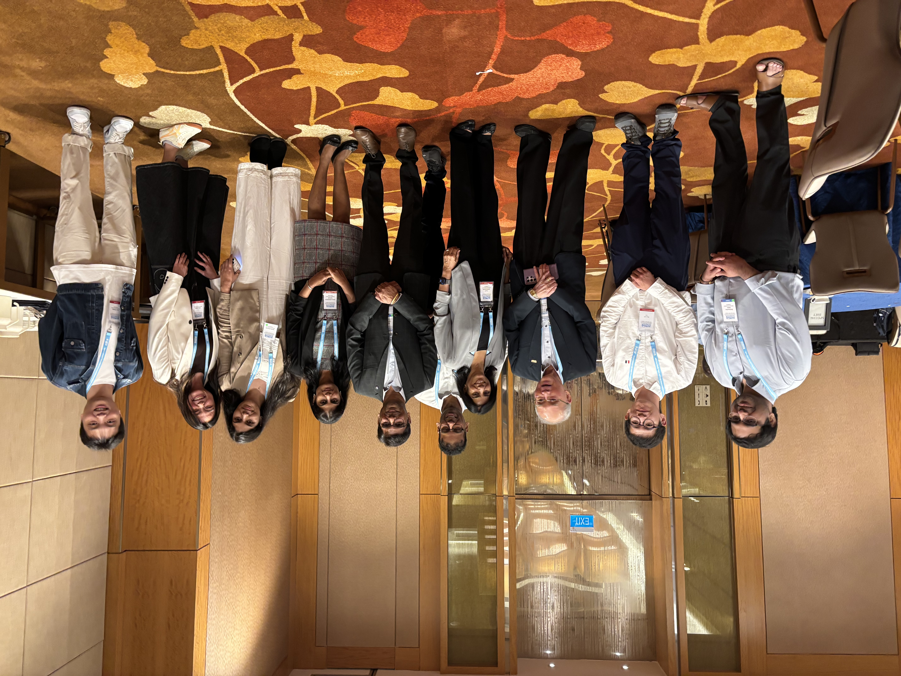
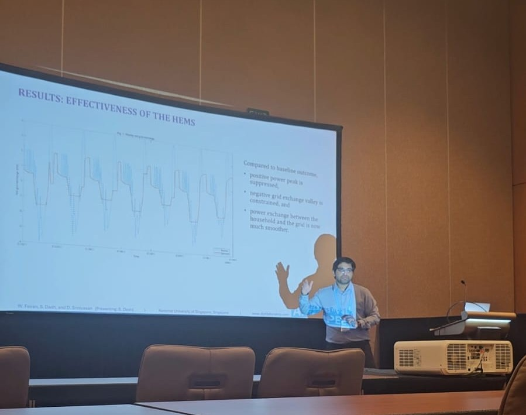
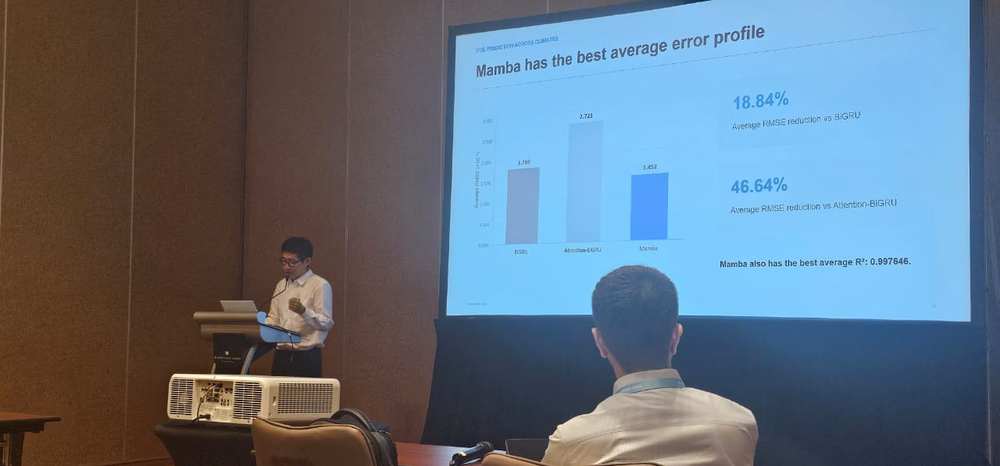
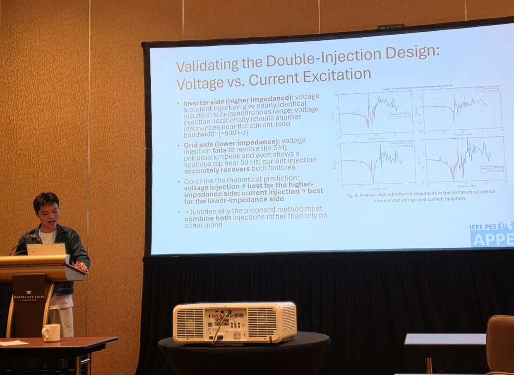

The 18th IEEE Asia-Pacific Power and Energy Engineering Conference (APPEEC 2026) concluded successfully in Singapore, bringing together researchers, academics, industry professionals, and members of the global power and energy community. Held from 24 to 27 August 2026, the conference provided an important platform for the exchange of ideas and recent advances across a broad range of topics in power and energy engineering.
Prof. Dipti Srinivasan played an important role in the successful organization of APPEEC 2026 as an Advisory Chair. The conference brought together participants from across the Asia-Pacific region and beyond, fostering discussions and collaborations on emerging challenges and opportunities in modern power and energy systems.

The research group also had a strong academic presence at the conference, with eight papers presented across different technical sessions. These contributions reflected the group's continuing research activities in power and energy systems, smart grids, renewable energy integration, and related emerging areas.
The eight papers presented by members of the group were:
- Borui Li, Paper 30: Day-ahead PV Forecasting with a Physics-aware Transformer Model Design
- Yue Xiang (Steven), Paper 148: In-Situ Double-Injected Impedance/Admittance Characterization of GridFollowing Inverter
- Dr. Nuo Lei (Reynolds), Paper 195: Accurate Data Center PUE Prediction Across Diverse Climates Using Feature Selection and Mamba State Space Models
- Dr. Sengthavy Phommixay, Paper 203: Asean Energy Transition and Grid Interconnection: Current Status, Key Challenges, and Opportunities
- Dr. Shitikantha Dash (First author: Leong), Paper 222: A Unified Multi-Objective Mixed-Integer Optimisation Model for Modern Home Energy Management Systems
- Dr. Vivek Narayanan, Paper 240: Intelligent Power Management of Solar PV-Integrated Sustainable EV Charging Stations Assisted with Neural Network
- Varsha Dahiya, Paper 241: Solar PV Forecasting for Electricity Markets: A Revenue-Space Evaluation Framework with Leakage-Safe Controls
- Dr. Shitikantha Dash (First author: Feiran Wang), Paper 242: An Analysis of EV Charging Station Infrastructure, Safety, and Regulatory Framework in Singapore





Beyond its research contributions, the group also actively supported the organization and smooth operation of the conference. Steven served as the student activities co-chair. Reynolds, Shitikantha, Varsha, and Steven served as student volunteers, contributing their time and effort to various conference activities and supporting participants and organizers throughout the event.
The successful conclusion of APPEEC 2026 was therefore particularly meaningful for the group, reflecting a collective contribution spanning conference leadership, academic research, and community service. We are proud to have been part of this successful event and look forward to continuing our research and engagement with the international power and energy community.